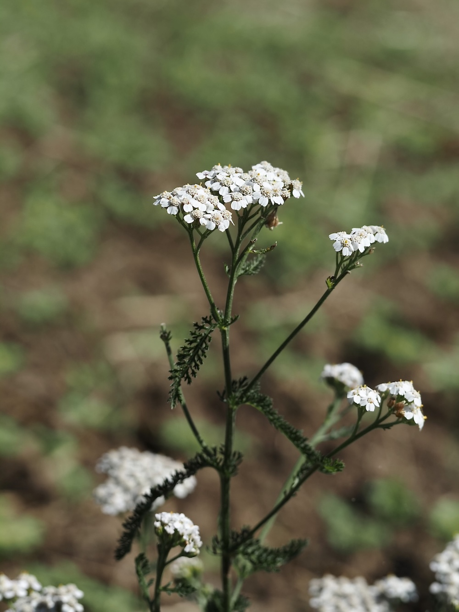

Eine Verbandsapotheke in Pflanzenform
Der Name „Achillea“ kommt vom griechischen Helden Achilles — der laut Legende seine Soldaten mit Schafgarbe verarztet hat. Klingt nach altem Geschwätz, hat aber einen Kern: Die Pflanze enthält tatsächlich Wirkstoffe, die Wundblutungen stillen und Entzündungen hemmen. Zerquetschte Blätter auf einen Schnitt zu legen, war jahrtausendelang ein Standardtrick — auch im Ersten Weltkrieg griffen Soldaten noch danach, wenn das Verbandszeug ausging.
Drei in einer
Die Schafgarbe ist eigentlich ein dreifaches Wunder: Die filigranen, mehrfach gefiederten Blätter (daher „millefolium“ = tausendblättrig) sind aromatisch und wurden früher in Bier und Salaten verwendet. Die kleinen weißen Schirmchen darüber bestehen jeweils aus Dutzenden winziger Korbblüten — wie eine eigene kleine Wiese auf einer Pflanze. Und unter der Erde versteckt sich ein zähes Wurzelsystem, das die Pflanze auch durch trockene Sommer bringt.